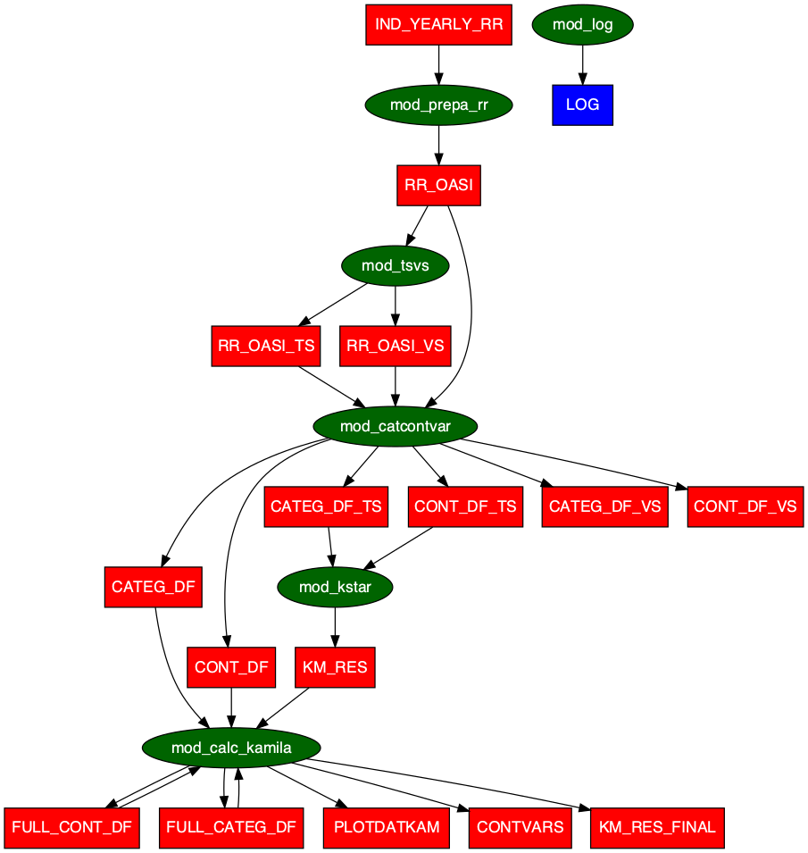

The goal of rrclust is to cluster the Swiss Pension Register (CCO/FSIO) using the kamila R package.
The anonymous data of the Swiss Pension Register (CCO/FSIO) are typically used to estimate and project (in the short, middle and long term) the revenues and the expenditures of the Old-Age and Survivors’ Insurance (OASI). In this perspective, it is essential to have a clear look at the register’s main statistical features. To better understand it and benefit more from its richness, we propose analysing the raw data by an appropriate clustering method.
We face three main difficulties:
As not only continuous but also nominal or categorical variables structure the register, we have to choose a clustering method that considers any types of variables;
The a priori number of clusters should be in the first step determined, and thus the question of how to fix it is essential;
The method should run over big data.
Recently, A. Foss et al. (2016) and A. H. Foss and Markatou (2018) proposed the kamila Method (KAy-means for MIxed LArge data), which is specifically designed to manage a clustering process for mixed distributions. Furthermore, a simple rewriting of the kamila’s algorithm permits an easy implementation in a map-reduce framework like Hadoop, thus being run on very large data sets. On the other hand, Tibshirani and Walther (2005) advocate the use of the “Prediction Strength” as a measure to find the optimal number of clusters.
We applied the kamila clustering method on the more than 2 000 000 observations of the Swiss Pension Register (CCO/FSIO) data. The technique allows us to determine the optimal number of clusters. On this basis, we can analyse the partition of our data. Indeed, each cluster is then analysed, and its principal features are described. As a result, it becomes possible to recognise the similarities and dissimilarities between the OASI pensioners subgroups according to their socio-demographic characteristics. These pieces of information are crucial to predicting revenues and expenditures of the OASI.
Installation
You can install the development version of rrclust from GitHub with:
# install.packages("devtools")
devtools::install_github("asam-group/rrclust")Code of Conduct
Please note that the rrclust project is released with a Contributor Code of Conduct. By contributing to this project, you agree to abide by its terms.
Related Paper
One needs to have the proper Swiss Pension Register (CCO/FSIO) data in order to run this code. Since this register is not public, you can find how it is used and learn more about the results in this Working Paper.
Future work
The next step is to implement some classification methods in the package rrml which will be applied to the kamila-clustered Swiss Pension Register (CCO/FSIO) thanks to the package rrclust.
Flow
The global workflow of the rrclust package is depicted in the figure shown below.
The green ellipses correspond to modules defined as functions accepting only a certain class of inputs, namely tibbles.
These tibbles can enter the modules individually or in the form of lists of tibbles, namely tidylists, containing the tibbles in a tidy form needed by the modules.
The red rectangles give the name of the tibbles which either are inputs or outputs of the modules. Therefore, they are the outputs of a transformation of the initial tibbles.
The blue rectangles depict the top level outputs, such as LOG indicating the run log including the rrclust package version, the dplyr library version, the date and the time of the code execution.
The arrows indicate the direction of the process. If there are two arrows between an ellipse and a rectangle in both directions, this means that an input has been renamed especially for this module and is given back as an output. This is the case of FULL_CONT_DF and FULL_CATEG_DF which are renamed tibbles of resp. CONT_DF and CATEG_DF and which contains the outcome variables aadr and monthly_pension opposite to their siblings.

Examples
Since the Swiss Pension Register (CCO/FSIO) data are not public, we offer two examples with randomly generated data which are used to demonstrate the workflow of this package.
Example step by step with randomly generated data
# enumerate required packages and test if they are installed
required_pkgs <- c(
"data.table", "DiagrammeRsvg", "dplyr", "fs", "magick", "memoise",
"rlang", "rrclust", "rstudioapi", "rsvg", "shiny", "tidyr", "utils"
)
for (pkg in required_pkgs) {
requireNamespace(pkg)
}
# load rrclust
library(rrclust)
# directory for the output
path_out <- tempdir()
# generate random demo data
path_random_data <- gen_demo_data()
# read the demo data
demo_data <- tidylist_read(path_random_data)
# relative path to the params container
path <- file.path(getwd(), "inst", "extdata", "params_kamila_large")
# read PARAM_GLOBAL
tl_PARAM_GLOBAL <- param_tidylist_read(path)
# replace empty variable with the temporary path
tl_PARAM_GLOBAL$PARAM_GLOBAL[["path_data"]] <- stringr::str_remove(
dirname(path_random_data), "/all"
)
PARAM_GLOBAL <- tl_PARAM_GLOBAL$PARAM_GLOBAL |>
dplyr::mutate_all(as.character) |>
tidyr::pivot_longer(
everything(),
names_to = "key",
values_to = "value"
)
# rewrite PARAM_GLOBAL with the demo data path
tidylist_write(tidylist(PARAM_GLOBAL), path = path)
# input
tl_inp_kamila <- mod_inp_kamila(path = path, method_name = "kamila")
# computations
tl_out_kamila <- wrap_kamila(tl_inp_kamila = tl_inp_kamila)
# output
path_out_identifier <- mod_out_kamila(
path = path,
path_out = path_out,
tl_inp_kamila = tl_inp_kamila,
tl_out_kamila = tl_out_kamila
)
# write the csv files
tidylist_write(
c(tl_out_kamila, mod_log()),
path_out_identifier
)
# store parameters (as a reference)
copy_param(path, path_out_identifier)
# access the output
browseURL(path_out_identifier)Example in one step with randomly generated data
# enumerate required packages and test if they are installed
required_pkgs <- c(
"data.table", "DiagrammeRsvg", "dplyr", "fs", "magick", "memoise",
"rlang", "rrclust", "rstudioapi", "rsvg", "shiny", "tidyr", "utils"
)
for (pkg in required_pkgs) {
requireNamespace(pkg)
}
# load rrclust
library(rrclust)
# directory for the output
path_out <- tempdir()
# generate random demo data
path_random_data <- gen_demo_data()
# read the demo data
demo_data <- tidylist_read(path_random_data)
# relative path to the params container
path <- file.path(getwd(), "inst", "extdata", "params_kamila_large")
# read PARAM_GLOBAL
tl_PARAM_GLOBAL <- param_tidylist_read(path)
# replace empty variable with the temporary path
tl_PARAM_GLOBAL$PARAM_GLOBAL[["path_data"]] <- stringr::str_remove(
dirname(path_random_data), "/all"
)
PARAM_GLOBAL <- tl_PARAM_GLOBAL$PARAM_GLOBAL |>
dplyr::mutate_all(as.character) |>
tidyr::pivot_longer(
everything(),
names_to = "key",
values_to = "value"
)
# rewrite PARAM_GLOBAL with the demo data path
tidylist_write(tidylist(PARAM_GLOBAL), path = path)
# execute the whole workflow
rrclust::run_kamila(path = path, path_out = path_out)
# access the output
browseURL(path_out)Results
You can see the results in the CSV file named KM_RES_FINAL.csv. The best number of clusters, i.e. the parameter kstar, is given by the value of the variable num_clust.
The CSV file KM_RES.csv shows you all the prediction strengths values for each number of clusters for which you ran the program (see parameter numberofclusters in PARAM_KAMILA.csv) and for each iteration.